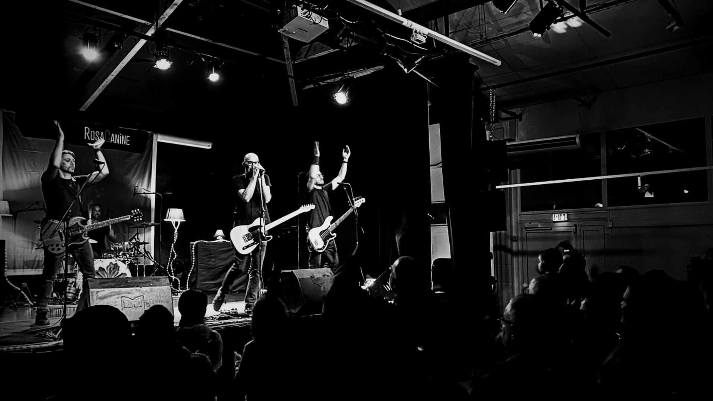
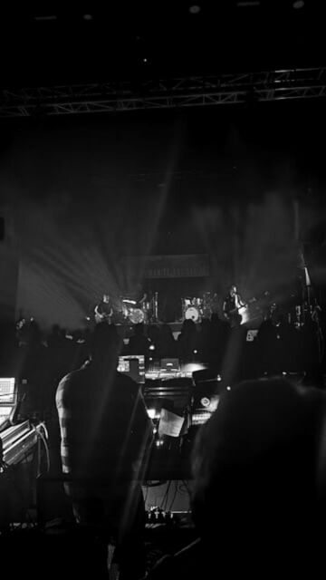
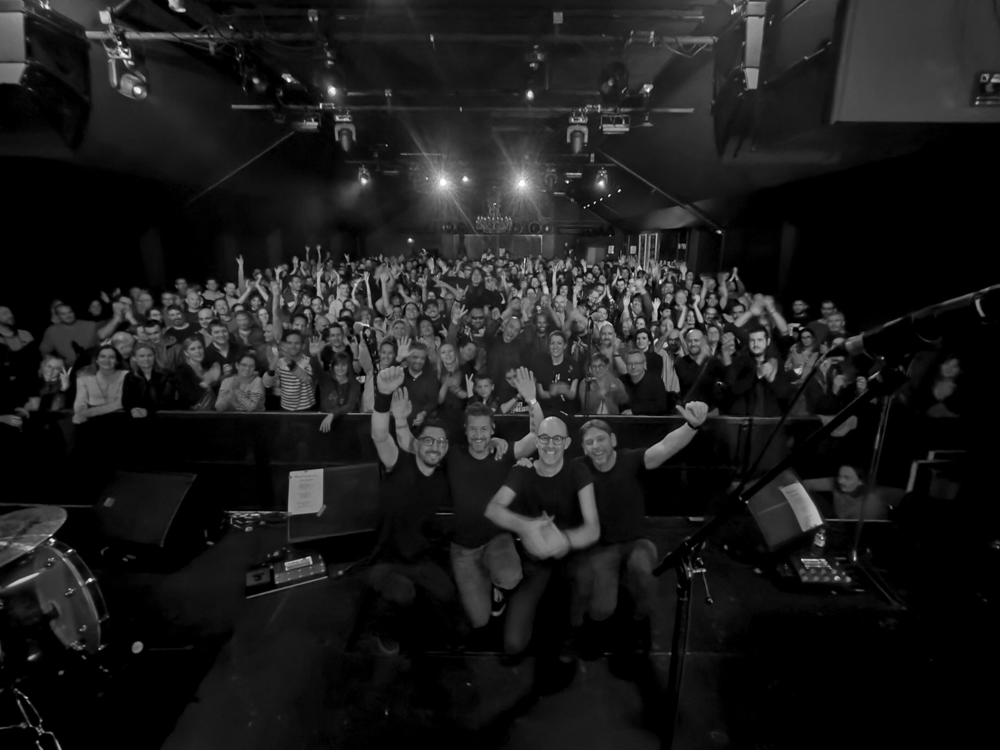
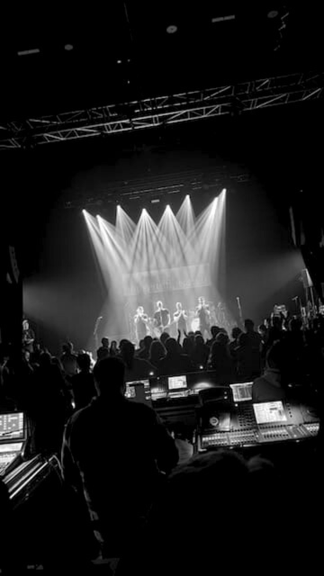

BIO
RosaCanine éclot en mars 2023. Tirant son nom de cet arbuste épineux et rustique, cette rose-chien leur ressemble.
Une bande son rock, dynamique et directe, en français dans le texte. RosaCanine caresse l’âme et pique au cœur.
Positif, poétique et passionné.
Cette bande aurait pu s’appeler « Les Copains d’abord ». Ces quatre-là n’attendaient qu’une opportunité pour se retrouver.
Originaire de Toulouse (Nord s’il vous plaît), Mathieu, Johan, Eric et Frédéric composent les membres de ce généreux gang.
Biberonnés à la sauce rock de l’amérique fugazienne, les guitares sont autant rageuses que mélodieuses.
La rythmique, ancrée, soutient cette voix habitée et ces mots qui vous embarquent.
Des concerts qui se jouent comme s’il s’agissait du dernier. Les regards sont complices et l’énergie communicative.
Dès ses débuts, la scène s’impose comme une nécessité viscérale.
La formation enchaîne les concerts tous terrains, des clubs locaux aux petites scènes et premières parties.
À chaque sortie, le propos s’affine et s’affirme pour laisser exploser cette hargne généreuse qui se balance entre
explosions soniques et moment d’accalmie suspendue.
Lire plus
MUSIQUE
EP "D'un trait" - 2024
PHOTOS





CONCERTS
À venir
| Dates |
Lieux |
Villes |
| 16 Avril 2025 |
Café Ô Berry |
Vierzon (18) |
| 17 Avril 2025 |
Le Murrayfield |
Bourges (18) |
| 19 Avril 2025 |
Le Central |
Bourges (18) |
| 21 Juin 2025 |
Parc du Chateau |
Launaguet (31) |
| 8 Août 2025 |
Festival Kiosq'n'roll |
Mirande (32) |
Passés
| Dates |
Lieux |
Villes |
| 13 Mars 2025 |
Le REX - DEPORTIVO |
Toulouse (31) |
| 21 Février 2025 |
Le 6MIC - Mouss et Akim (Zebda) |
Aix en Provence (13) |
| 25 Janvier 2025 |
Salle Yves Montant |
Saint Alban (31) |
| 18 au 20 Janvier 2025 |
Résidence |
Saint Alban (31) |
| 29 Novembre 2024 |
Levrette Café |
Nantes (44) |
| 28 Novembre 2024 |
Les Fleurs du Malt |
Nantes (44) |
| 25 au 27 Novembre 2024 |
Le Zinor |
Montaigu (85) |
| 23 Novembre 2024 |
Le Bar des artistes |
La Roche-sur-Yon (85) |
| 22 Novembre 2024 |
La Minute Blonde |
Fontenay le Compte (85) |
| 9 Novembre 2024 |
L'Impass |
Aussone (31) |
| 5 Octobre 2024 |
Le Cercle des Citoyens |
Mont-de-Marsan (40) |
| 4 Octobre 2024 |
Le Café Suspendu |
Montblanc (32) |
| 28 Septembre 2024 |
La Scène |
Pau (64) |
| 6 Juillet 2024 |
Festival de Lacave |
Lacave (09) |
| 29 Juin 2024 |
Festival Rock'N Boulouze |
Seysses Savès (32) |
| 22 Juin 2024 |
Parc du Chateau |
Launaguet (31) |
| 21 Juin 2024 |
Place Gambetta |
Villefranche de Lauragais (31) |
| 20 Juin 2024 |
Chez Granny |
Cornebarrieu (31) |
| 1 Juin 2024 |
Festival ô Fraises |
Lapeyrouse-Fossat (32) |
| 27 Avril 2024 |
Le Central |
Bourges (18) |
| 26 Avril 2024 |
Showcase au Pages du Donjon |
Bourges (18) |
| 26 Avril 2024 |
Le Central |
Bourges (18) |
| 26 Avril 2024 |
Le Belzebuth |
Nevers (58) |
| 25 Avril 2024 |
Scène Berry |
Bourges (18) |
| 13 Avril 2024 |
Rock'Eup Fest |
Eup (31) |
| 23 Mars 2024 |
Le Garage |
Carbonne (31) |
| 2 Février 2024 |
P'aus Café |
Bonrepos sur Aussonnelle (31) |
| 3 Février 2024 |
Detroit Brasserie |
Toulouse (31) |
| 26 Janvier 2024 |
Celtic Pub |
Tarbes (65) |
| 8 au 10 Janvier 2024 |
Le Bascala |
Bruguières (31) |
| 9 Décembre 2023 |
Festival A69 |
Castres (81) |
| 25 Novembre 2023 |
Axis Musique |
Toulouse (31) |
| 2 au 3 Octobre 2023 |
Le Cri'Art |
Auch (32) |
| 4 Août 2023 |
La Grange |
Toulouse (31) |
| 30 Juin 2023 |
The MAD Jack |
Mont-de-Marsan (40) |
| 28 au 29 Juin 2023 |
La Tanière Records |
Saint Perdon (40) |
| 17 Mars 2023 |
Au Relais de la Diligence |
Fonsorbes (31) |
| 16 Mars 2023 |
La Brasserie du Levant |
Toulouse (31) |